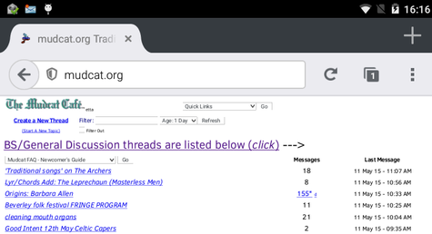
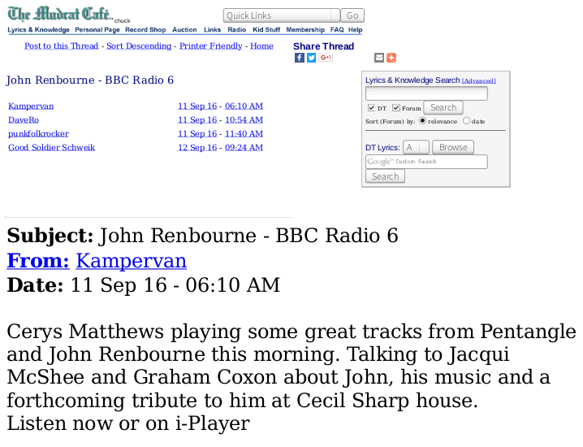

Mudcat Browser Tools
Browser Addon: Mudcat Browser Tools
This browser addon helps locate new posts on Mudcat by identifying which threads have new posts since you last viewed them and going straight to the first new post. It also adds some buttons to assist posting.
- Displays threads posted to since the list was last shown in italics.
- Scrolls a thread to the first new post (optional).
- If posting as a guest, remembers your last user name.
- Preselects preview when posting.
- Adds quoting and linking buttons.
- Saves and recovers text in case of failure to post.
It works best if you keep the thread list open, and open threads in new tabs, rather than going backwards and forwards.
Screenshots: click for a bigger image.


There is a Firefox and a Google Chrome version. Click on the yellow link to find out how to install it.
Mudcat Browser Tools (Addon for Firefox and Firefox for Android.)
Mudcat Browser Tools (Chrome extension.)
Userstyles
Userstyles alter a webpage's appearance. They run under the Stylish addon for Firefox or for Chrome. Click the blue button to install.
Mudcat compact forum Userstyle: mudcat - compact forum
This userstyle is aimed at small screens and suppresses the search boxes at the top of the front page; the search boxes are still on every thread page.

Screenshot: click for a bigger image.
Mudcat - reorder index columns Userstyle: mudcat - reorder index columns
This userstyle is designed for small displays. It moves the number-of-messages column to the left of the index page so that you can zoom in without the number of messages and associated multi-page links disappearing off the screen.

Screenshot: click for a bigger image.
Mudcat magnify posts Userstyle: mudcat - magnify posts
This userstyle is designed for viewing mudcat on a phone in portrait mode. It doubles the font-size of the posts, which should make them readable without zooming - which makes them go off the edge of the screen.

Screenshot: click for a bigger image.
DaveRo
v12/22-12-2016